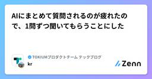

TOKIUMプロダクトチーム テックブログのフィード
https://zenn.dev/p/tokium_dev
『未来へつながる時を生む』 株式会社TOKIUMの技術ブログです🕰
フィード

米津玄師に学ぶ：一人で全部作れる時代に、なぜ人と作るのか
TOKIUMプロダクトチーム テックブログのフィード
こんにちは。株式会社TOKIUM26卒エンジニアのタケノコご飯です。突然ですがエンジニアの皆さん、今日は人と話しましたか？在宅で、且つmtgのない日だともしかしたら一言も人と話していないかもしれません。出社している皆さんも、今日何人の同僚と会話をしましたか？Slackなども含め、どのくらい人と交流しましたでしょうか。正直なところ、私はつい個人作業に没頭してしまい、今日誰とも関わらなかったか、、？という日が月に一回くらい発生してしまいます。質問はまずAIに投げ、情報もAIが取ってきて、実装もAIが行い、なんならレビューもAIが行う。（私は新卒ですが）以前と比べて一人で完結す...
1日前

AIにまとめて質問されるのが疲れたので、1問ずつ聞いてもらうことにした 2
2
TOKIUMプロダクトチーム テックブログのフィード
複雑な作業をAIに頼むと、質問をまとめて投げ返されることがよくあります。たとえば、退会機能を作ってもらおうとしたとき。確認したい点が5つあります。1. 退会したユーザーの投稿は、残しますか？消しますか？2. 退会後、同じメールアドレスで再登録できるようにしますか？3. 有料プランの途中で退会したら、残りの期間分は返金しますか？4. ...5. ...元気なときの私なら、面倒ですが全部まとめて答えてやろうという気にはなります。しかし、頭を使って疲れているときは、チラ見しただけでもう嫌になってしまいます。 1個ずつ質問させるそこで、「とにかく認知負荷を下げたい！」という思...
3日前

半年前の自分に伝えたいこと 2
TOKIUMプロダクトチーム テックブログのフィード
半年前、私はプロダクト部のあるチームのリーダーになったばかりでした。チームには、私を含めて開発を始めてから1年ほどのメンバーが3人いて、チームとしてこれから！という状況でした。私自身はじめてのチームリーダーということもあり、何をどうしたらいいかわからないまま、チームの業務を担当していました。この半年を振り返ると、反省することも、やっていてよかったと思うことも多くあります。この記事では、そんな半年前の自分に向けて、今の自分からのアドバイスを書いてみます。この記事を読むどなたかの助けになれば幸いです。 会議の前に話す要点を必ず整理しよう一つ目からあまりにも当たり前の話かもしれま...
3日前

AIが書く「読みづらいADR」に発狂しかけたので、ADRのガイドラインを作った 185
TOKIUMプロダクトチーム テックブログのフィード
はじめにみなさん、ADR（Architecture Decision Record）は書いていますでしょうか？AIを使ったソフトウェア開発において「意思決定の記録を残す」ことの重要性は、今や多くのエンジニアに周知されているかと思います。僕が率いるチームにおいても、プロジェクト開始初期から様々な技術的な意思決定をADRに記録し、運用してきました。最近では、ADRのドラフト作成もAIに任せるようになっています。ところが、ADRを書くルールを整備しないままAIに書かせていると、 人間が読み返しづらいADR が次々と出てくるようになりました。「人間がじっくり目を通すべきものの代表格」...
5日前

プロダクトの情報を「浴びるように」見られる場所を作った話
TOKIUMプロダクトチーム テックブログのフィード
はじめにプロダクト本部の寺田です。複数のプロダクトを担当する開発部門で、部長をしています。この数ヶ月、プロダクトの状況を一画面に集める仕組みを作って、部のメンバーに共有し始めました。社内では「コックピット」と呼んでいます。情報を集めたダッシュボードの話は、世の中にもうたくさんあります。なのでこの記事では、つくりの話は少しにして、部長として何を思ってこれを作ったのか、一緒に働くPdMたちとこれを使ってどう話したいのかを中心に書きます。 PdMの視界は、開発に寄りやすいTOKIUMのPdMは、スクラム開発におけるプロダクトオーナーの役割も兼ねていることが多く、その分だけ視界は...
8日前
AIの「やりました」を信じるのをやめた日。人間側の完了チェックリスト
TOKIUMプロダクトチーム テックブログのフィード
AIの「やりました」の報告の後、何を見ていますかClaude CodeやCodexなどのAIコーディングエージェントに作業を任せると、最後に「完了しました。テストも通っています」という報告が返ってきます。僕はそこからdiffを読んだあと動作を確かめ、テストも自分で流してからPRを出します。ただ最近、この確認の起点が報告になっていることに気づきました。「ここを変えました」と言われた場所は見ますが、報告に出てこない場所は、そもそも見る対象に入ってきません。報告は正しいことしか言っていませんが、やったことを全部言っているとは限りません。頼んでいない箇所が変わっていたり、「変更していませ...
10日前
「伝わる資料」と「聞ける場」をつくる。インターン受け入れで意識した2つのこと
TOKIUMプロダクトチーム テックブログのフィード
はじめにTOKIUMインボイスチームの松本です！9月28日から10月2日までの5日間、サマーインターンで僕たちのチームにも学生が来てくれました！この記事では、受け入れる側として意識した2つのことについて書きます！ インターンの中身今回のインターンは、学生がフルタイムでチーム開発に携わる実務型のインターンでした。取り組んでいただいたのは実際のプロダクトの機能開発で、仕様の整理から実装、QAまで通しで行っていただきました。僕は受け入れ兼サポート役として参加しました。TOKIUMインボイスは、請求書の受領から仕訳・支払までを担うプロダクトです。会計ルールや法制度、企業ごと...
11日前
新卒エンジニアが初めてのインターン受け入れでマネジメントに奮闘した話
TOKIUMプロダクトチーム テックブログのフィード
はじめにTOKIUMでエンジニアをしているちっちです。26卒として入社して早6カ月、仕事にも慣れてきたある日、開発インターンのメンターを任されることになりました。このインターンでは学生に本物のプロダクトに触れてもらい、5日間のチーム開発に挑戦してもらいました。初めて自分以外のメンバーのマネジメントに奮闘する中で、学生側のサポートに集中するあまり、私は1つの落とし穴にハマってしまいました。今回は初めて他者のマネジメントに挑戦する人が遭遇するであろう見落としについて、インターン運営で得た教訓とともに書いていこうと思います！ どんなインターンだったかこのインターンはキャッチアッ...
12日前
AIネイティブなインターン生を受け入れて考えた、これからの開発エンジニア
TOKIUMプロダクトチーム テックブログのフィード
こんにちは、TOKIUM デジタライズチームのおかもりです。お客様からお預かりした領収書などのデータ化作業を行うシステムと、その作業実績を管理するシステムの開発を担当しています。9/28〜10/2の5日間で、インターン生2名を受け入れました。受け入れを通して感じたことなどを、この記事に書きます。 受け入れの準備学生時代にエンジニア職のインターンを経験したことがありませんでした。そのため、今回はじめてインターン生の受け入れ担当に指名されてからは、何もかもが手探りで始まりました。 任せるなら大きいタスク？小さいタスク？先ほど挙げた2つのシステムのうち、私が主担当を務めている...
13日前
あなたはQA/品質保証に向いている、という話
TOKIUMプロダクトチーム テックブログのフィード
はじめに株式会社TOKIUMでQAエンジニアをしている西田です。今回は、これまで公開してきたような技術共有とは趣向を変えて、軽めの雑談を持ってきました。個人の勝手な想像も含めた見解なので、その点ご容赦ください。生成AIが開発に入ってきて、品質保証（QA）の立ち位置もだいぶ変わってきました。コーディングに他職種の人が入ってきやすくなったのと同じで、QAも、AIの手を借りれば未経験の人でもある程度のテストはこなせるようになっています。しかも上流工程が爆速になったので、下流にいるQAがボトルネックになってリリースを止めてしまう心配は、前よりずっと大きくなりました。誰が担当し...
16日前
ghq と fzf でリポジトリ・ワークツリー間の移動を楽にする
TOKIUMプロダクトチーム テックブログのフィード
はじめにターミナルでリポジトリやワークツリーを行き来するのって、面倒ですよね。ghq と fzf を組み合わせると移動が楽になると小耳に挟んだので、設定してみました。設定すると、こんなふうに名前を選んで移動できるようになります。（GIF では撮影用の保存先を使っています） ghq とはghq は、リポジトリの置き場所を標準化するツールです。決まったルールで保存されるため、clone するたびに保存先を考えたり、後から置き場所を探したりする手間が減ります。コマンドできることghq get <リポジトリのURL>リポジトリを clone...
17日前
多階層の部署データ設計 第3回 EXPLAIN ANALYZE で解剖する
TOKIUMプロダクトチーム テックブログのフィード
本シリーズは全3回の予定です。第1回: 5つの手法と検証設計第2回: ベンチマーク結果 ― 読みは横並び、差は「書き込み」に出た第3回: EXPLAIN ANALYZE で解剖する（本記事） 前回までのあらすじ5 手法（隣接リスト+再帰CTE / ancestry / nested set / closure_tree / ltree）に同一の組織ツリーを投入して実測したところ、読み取りは手法差 2〜3 倍以内に収まる一方、サブツリー移動では約 780 倍の差がつきました。最終回は「なぜそうなるのか」です。各手法が発行する SQL に EXPLAIN (ANALY...
18日前
多階層の部署データ設計【第2回】結果編
TOKIUMプロダクトチーム テックブログのフィード
本シリーズは全3回の予定です。第1回: 5つの手法と検証設計第2回: ベンチマーク結果（本記事）第3回: EXPLAIN ANALYZE で解剖する 前回のあらすじ多階層の「部署」データを扱う代表的な 5 手法 ―― 隣接リスト+再帰CTE（素の parent_id）/ ancestry / awesome_nested_set / closure_tree / PostgreSQL ltree ―― に同一の組織ツリーを投入し、3 つの操作を実測します。環境: Ruby 4.0.5 / Rails (ActiveRecord) 8.1.3 / PostgreS...
19日前
多階層の部署データ設計の比較【第1回】5つの手法と検証設計
TOKIUMプロダクトチーム テックブログのフィード
本シリーズは全3回の予定です。第1回: 5つの手法と検証設計（本記事）第2回: ベンチマーク結果 ― 読みは横並び、差は「書き込み」に出た第3回: EXPLAIN ANALYZE で解剖する ― なぜ速い/遅いのか、索引は万能ではない はじめに弊社のプロダクトには、多層化した「部署」を軸に多くの処理を行っているものがあります。そのプロダクトでは2016 年のサービス開始から約 10 年、階層データの読み書きを速くするための改修を幾度も重ねてきました。その経験から生まれた問いがあります。「最新の安定スタックでは、結局どの手法で階層データを持つのが最適なのか？」...
20日前
Orcaを使い始めて便利だった機能を紹介します
TOKIUMプロダクトチーム テックブログのフィード
TOKIUM でエンジニアをしているren21です。最近、Orca というデスクトップアプリを使い始めました。Claude Code や Codex などの AI エージェントを動かすための無料のオープンソースです。Orca は自分たちのことを ADE（Agent Development Environment）と呼んでいます。IDE が人がコードを書くための環境なのに対して、ADE は AI エージェントに開発を任せるための環境、という意味です。エージェントを動かすターミナルに加えて、作業場所（ブランチ）の管理、ブラウザ、コードの差分、エージェントへの指示までを1つのアプリで扱えま...
24日前
Goイテレーターのエラー処理
TOKIUMプロダクトチーム テックブログのフィード
はじめにこんにちは、Lapi（@dragoneena12）です。Go 1.23 からイテレーターが導入され、関数を for range で回せるようになりました。スライスやマップだけでなく、木構造やファイル、HTTPレスポンスなども for range で1件ずつ処理できると便利です。ただし、ファイルの読み込みやネットワーク通信は途中で失敗することがあります。このときエラーをどう返すべきかについては、実は公式の推奨パターンがありません。この内容を Gophers Meetup 2026 で発表する予定だったのですが、当日体調を崩してしまい発表できず…😭せっかくスライドを準備...
25日前
肩肘張らないプロジェクトマネジメントの第一歩 ～AI時代をいきる”新卒”たちへ～
TOKIUMプロダクトチーム テックブログのフィード
!一般に小難しく聞こえる「プロジェクトマネジメント」を理解すべく、「自身の日常の体験」とつないで、難しく考えすぎず捉えてみよう、というお話です。終盤は、それを踏まえつつ、今の時代だからこそ、どういった思いを込めて仕事ができるといいだろうか、というお話をそえました。”新卒”！と大々的にかきましたが、もちろん新卒に限った話ではありません！ 「AIがあるのに、仕事ってなんかうまくいかないなぁ」「AIを上手に使いこなせば、経験や世代を超え、多くの困難な仕事や課題にチャレンジし、乗り越えていける！☆」みんなが春、”新卒”として入社し、研修でそう伝えられてから、約半年。現場に入...
25日前
HTMLを解釈できないJevに、Line-by-line searchでスクレイパーの失敗原因を探させてみた
TOKIUMプロダクトチーム テックブログのフィード
!この記事で書くことJev でスクレイパー失敗検知の仕組みが作れないかJev には HTML を DOM として解析する機能が無いため、各行に番号を付け、見つからなくなった要素に相当する行を選ばせたテストでは59個とも成功した誤ったセレクタのうち、58個を Jev が選んだ行との照合で止めた はじめにJev は文章を作らずに、決めておいた選択肢から答えを選び、確信度を付けて返すモデルです。この Jev で、スクレイパーの弱点を補えないかと考えました。スクレイパーを書いていて困るのは、相手のサイトの HTML が変わったときです。セレクタが0件になっても、処理がエ...
1ヶ月前
Gemini 3 系で確信度が取れなくなったので、Clef と Decisions API で補えるか試した
TOKIUMプロダクトチーム テックブログのフィード
kztm です。請求書や領収書を AI で読み取るとき、読み取った値をそのまま採用するか、採用しないかで、その後の処理を変えることがあります。たとえばこのようなロジックの変更の線引きに使える確信度が、Gemini 3 系では取得できなくなっていました。そこで、Cloudflare の Clef と OpenAI の Decisions API に、読み取った値が合っているかを確率で答えさせれば、確信度の代わりになるかを、見本の書類で試しました。どちらも、この 10 月に公開されたばかりです。今回の検証では、Clef の数字は主に、AI の答えがOCR（画像の文字を読み...
1ヶ月前
QAにおける敵対的レビューのすゝめ
TOKIUMプロダクトチーム テックブログのフィード
!この記事は何の話か（3 行まとめ）静的解析のように完全にはなりえない道具に AI の敵対的レビューをかけると、反例探しが終わらず、指摘をすべて封じると道具そのものが使えなくなりました（試算では網羅できる要素が388件から1件に）信じてよい前提と、前提が破られたことを見つける検知器を明文化し、指摘を3つに分類させると、どこを直すべきかがはっきりしましたそれでも指摘はまっすぐには減らず、最後にやりとりを終わらせたのは「実データの誤判定につながる指摘だけをブロッカーにする」という止める基準でしたCodex に敵対的レビューを頼むたびに「ブロッカーがあります」という返事が返って...
1ヶ月前